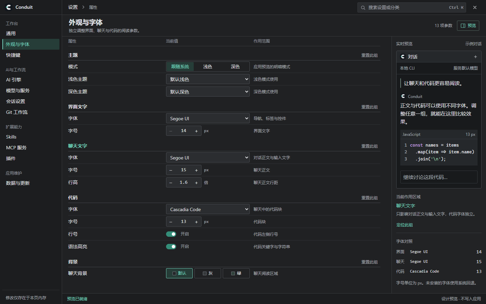

根据你的偏好：技术风格、紧凑布局、信息密度高。
固定目录、紧凑属性行、右侧预览。主题、界面、聊天与代码同时可调，适合长期使用的桌面工作台。
13 项参数同屏 / 1440 × 900
以上均为 HTML 设计初稿。点击截图可操作；所有修改只存在本次浏览器内存。A 的深色编辑器固定、主题作用于预览；B/C 按系统主题打开，三版均可切换预览效果。
| 方向 | 参数如何组织 | 实际使用的取舍 |
|---|---|---|
| A 属性面板 | 左目录 / 中间分组属性 / 右阅读效果 | 位置稳定、整体均衡；宽度减少时收起辅助预览。 |
| B 预览检查器 | 中间完整对话与代码 / 右侧紧凑控件 | 最适合反复调整阅读效果；小窗口时需滚动检查器。 |
| C 参数表 | 上方分类与筛选 / 名称、值、作用范围三列 / 底部短预览 | 扫描和比较最快；表格感最强，预览展示较短。 |
建议优先评估 A：它在高密度和分类可发现性之间最均衡。喜欢更直接的参数操作可选择 C；需要边读边调可选择 B。三个方案都覆盖层级、视觉与操作效率。
第二轮减少页头和组内留白、展开多组参数、把数值与作用范围对齐。第一轮保留在原目录，可随时比较。